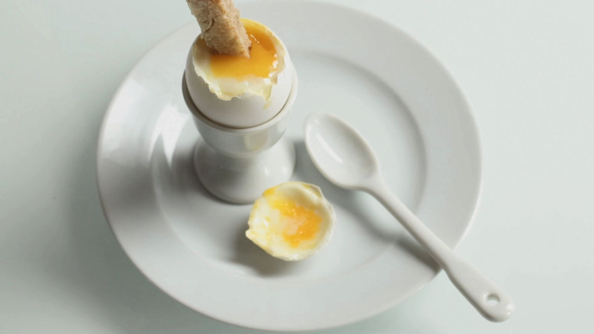

Perfect Boiled Eggs

When you're a shit cook but still want sometime tasty!
Difficulty: Easy
Time: 4 to 7 minutes
Ingredients
- 2 medium eggs
- Bread for soldiers
- salt to taste
Method
- Fill a medium sized saucepan with water and bring to a rolling boil.
- Make sure your eggs aren't fridge cold. By having the eggs at room
temperature, it will be less of a shock for the egg reaching the hot
water and therefore less likely to crack. You can also use an egg pricker
to make a very small hole in each egg before boiling, which will also reduce
the chances of it cracking in the heat. Slowly lower the eggs into the water
using a spoon.
- Set your timer for 4-5 mins for runny/dippy eggs to serve with soldiers, or 6-7
mins for soft-boiled eggs for a salad. If serving in a salad, plunge the eggs into
a bowl of cold water as soon as the timer goes off – this will stop them cooking and
cool the shells quickly for peeling.
Return to main page